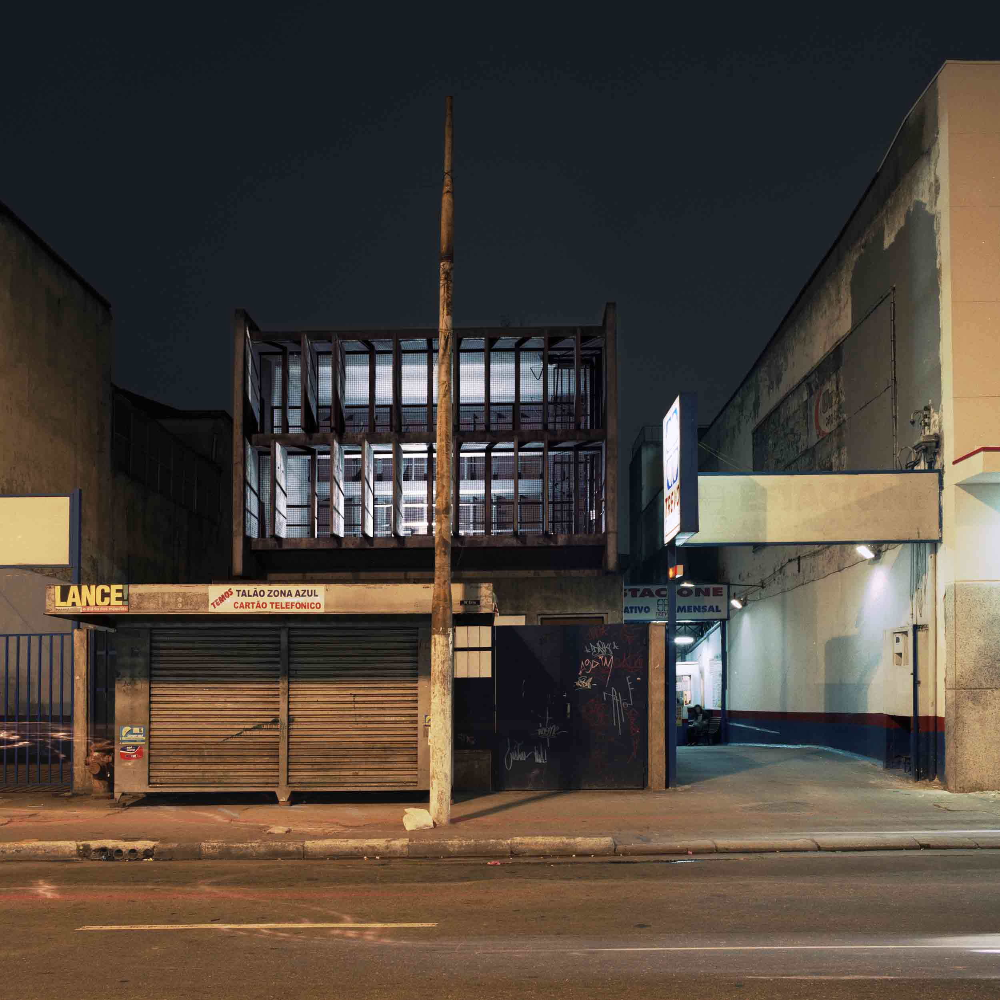
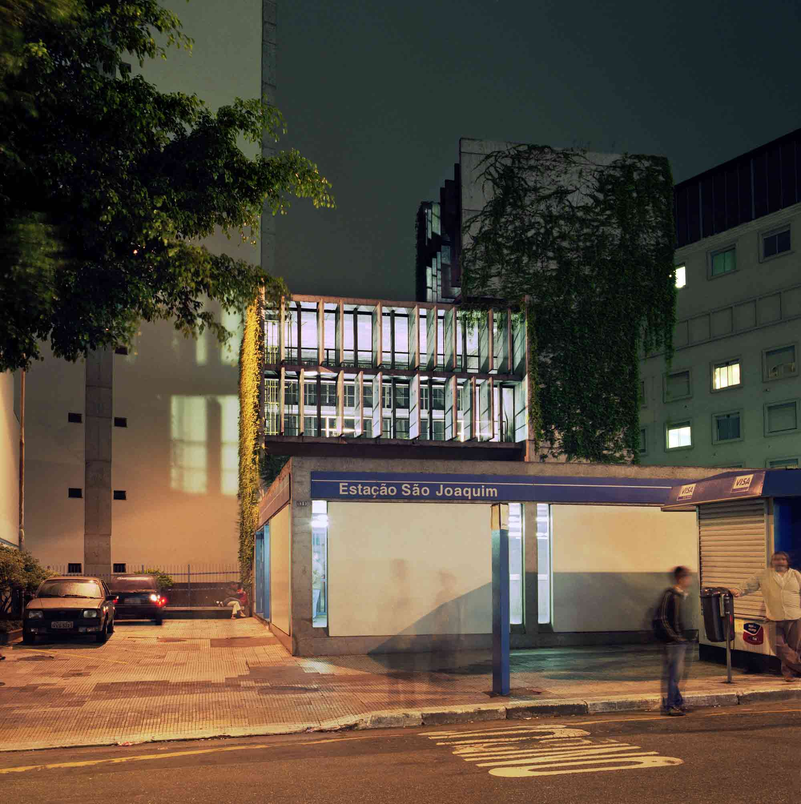
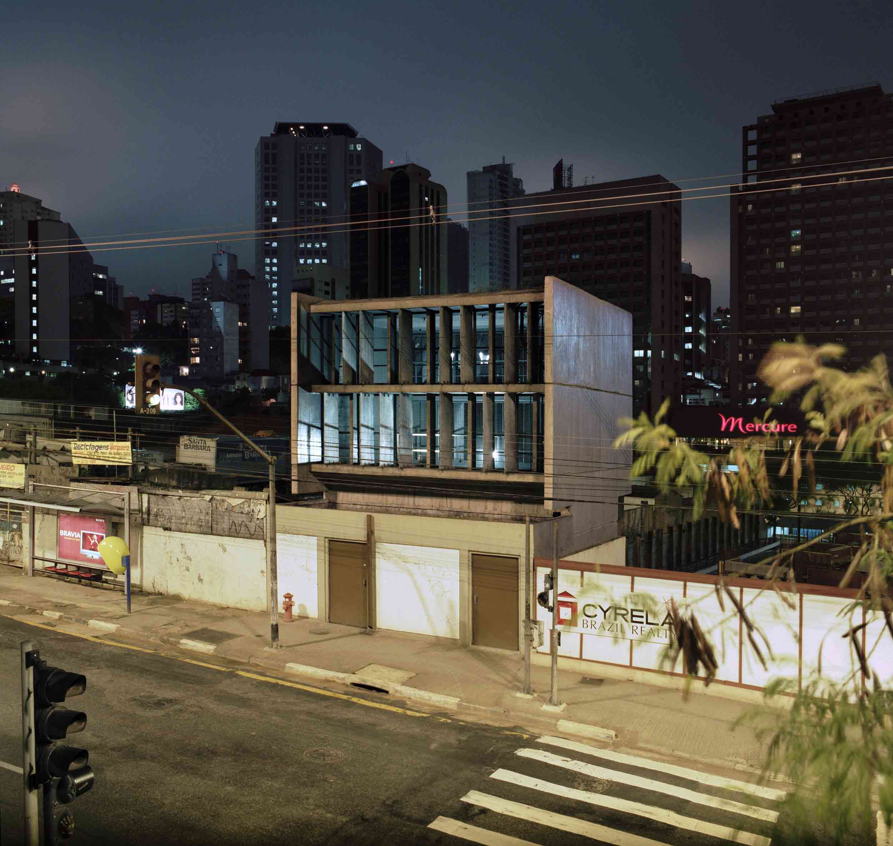
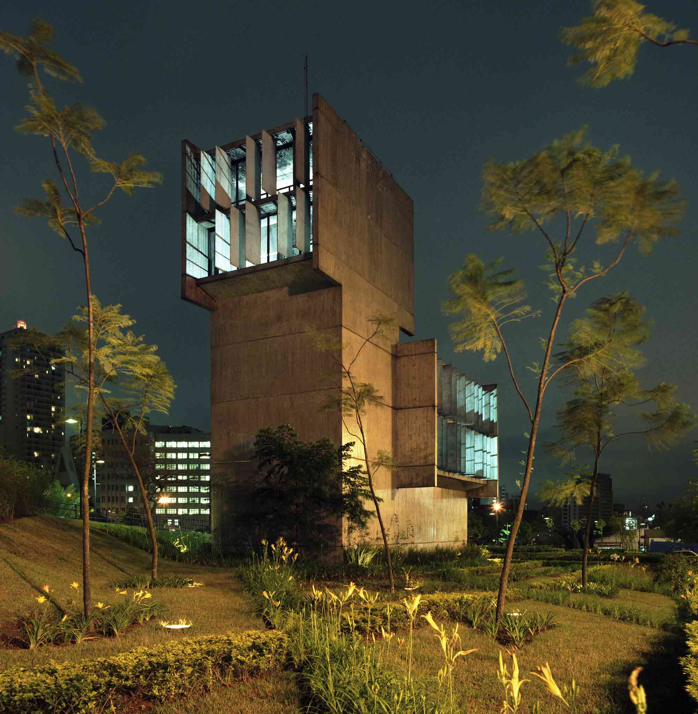
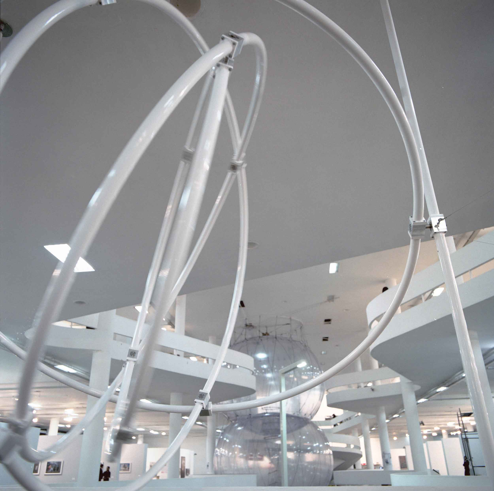
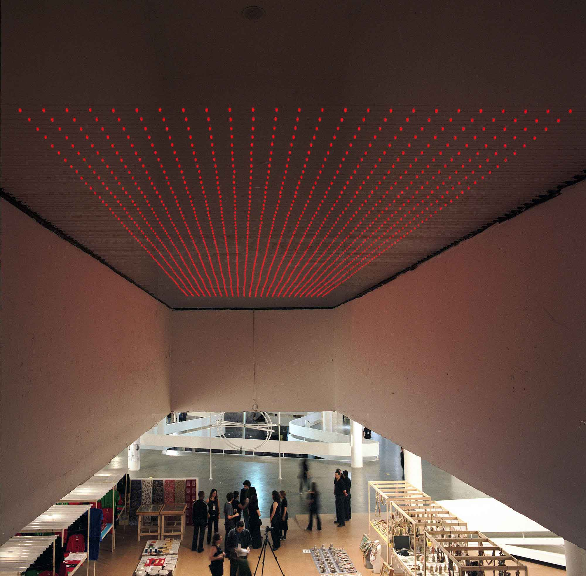

27ª Bienal Sao Paolo
2006
Curated by Lisette Lagnado and Jose Roca
The curators requested us for a public project in the urban area of Sao Paulo and in
addition to that bring
one or more old existing works for the pavilion.
Variations On a Theme
We did our preliminary visit to Sao Paulo in April 2006. In the very beginning we got interested on the large
scale minimal concrete structures that we ran across in different parts of the city. To us these structures
seemed to exist somewhere in the middle ground between a building, a sculpture and anonymous bit of machinery.
These architectons turned out to be ventilation towers for Metro Line 1, which runs north-south trough the
city. Although all towers are all different they are still somehow the same, like variations of same
architectonic theme.
The aim of the project is to get people to notice the unified entity that these towers form in the cityscape.
The relationship between the towers and the surrounding cityscape varies. They crop up in surprising places,
in architectonically, socially and ethnically different parts of the city, fitting into or contrasting with
the surrounding cityscape. More generally they represented the beauty of spontaneous and anonymous
(anti-)architecture, which metropol like Sao Paulo was stuffed with.


The first part of the project is a publication which documents and displays the architectonic variations in
these 22 towers. At the same time, this publication available at the book shop of biennial constitutes a guide
book that can be used to find the towers.
For the second part of the project we chose a six-tower fragment in the central part of the city. The towers
selected are a cross-section of the different tower variants. At night, the towers are brightly lit from
inside, to form a series of light sculptures running through the city center. This is also intended to get the
locals to see these everyday structures in a new light - in a way, through outsiders' virgin eyes.


Antigravity Model
"Antigravity Model" from 2005 was the old work we showed in the biennial. The installation was situated in the center of the second floor of the pavilion. The installation was situated in the centre of the building next to the free shaped void and therefore it was visible from different floors of the building. "Antigravity model" is a construction made of powder paint coated aluminum tube in which four interlocked rings rotate inside each other suspended on two pillars halfway between floor and ceiling. The rings of more than three meters in diameter can be put in to motion simply by giving a push to the largest one of them. They orbit each other moving slowly and effortlessly.

Pattern Recognition
The other work we showed in the pavilion was a new site-specific installation called "Pattern Recognition
Setup".
It was built above the central staircase and escalator connecting the second and third floor of the pavilion.
This work was a version of the site-specific led-installations that we been working on for several years.
The installation was made of 1875 self-blinking led-lights which are soldered to thin brass wires stretched
across darkened void above the staircase. The led-lights formed a 75 x 25 pcs grid, sized 6 x 2 meters
hovering above the staircase. The blinking sequence of each led differs slightly from others and together they
create a randomly blinking matrix in which about 50% of the lights are on simultaneously. Human eye perceives
the simultaneously blinking lights as patterns which constantly move across the matrix.
